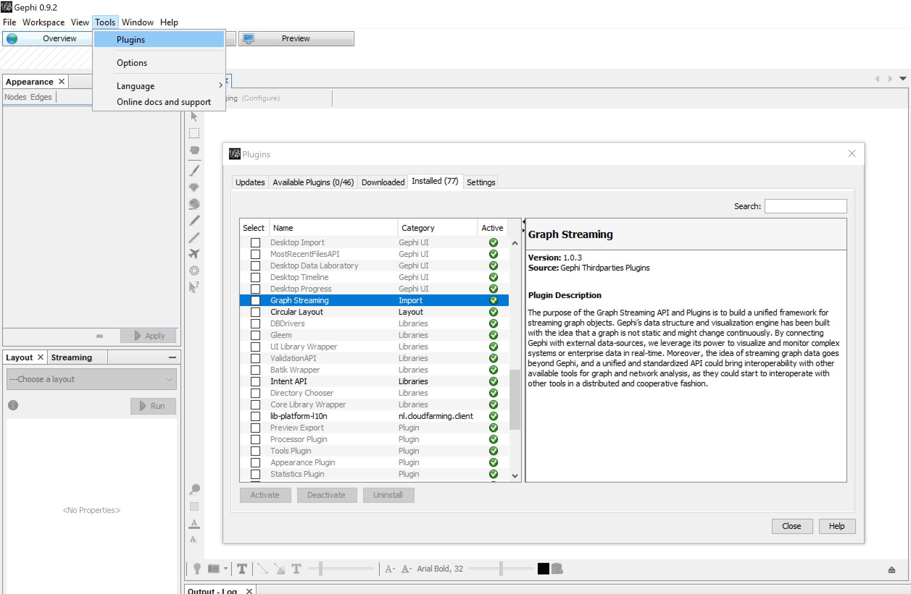
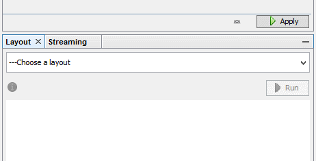

Installation instructions
The following steps are necessary to stream graph data from F# interactive to gephi:
- Install Java and JDK
- Install Gephi
- Install Graph streaming plugin in gephi:

- Enable the master server (default settings:)

If you want to use another connection than the default connection, you can use the Streamer.setEnvironment function to do so:
1:
|
|
|
1: 2: 3: 4: 5: |
|
1:
|
|
Which will change the connection string to your liking:
|
namespace FSharpGephiStreamer
val a : string
val b : int
val c : string
val usrConfig : string
val sprintf : format:Printf.StringFormat<'T> -> 'T
val currentConfig : string
module Streamer
from FSharpGephiStreamer
from FSharpGephiStreamer
val getEnvirmonment : unit -> string
val yourIp : string
val yourPort : int
val yourWorkspace : string
val setEnvirmonment : ip:string -> port:int -> workspace:string -> unit